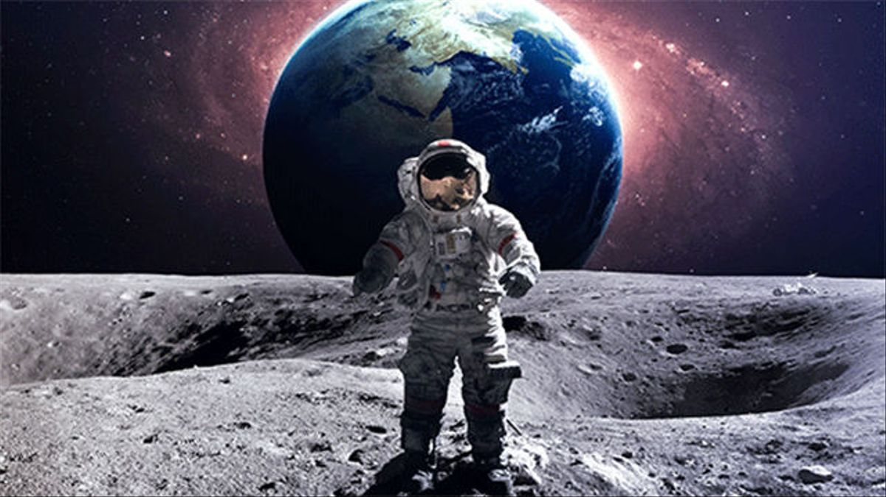

La Administración Espacial Aeronáutica de Estados Unidos (NASA, por sus siglas en inglés) es una agencia dedicada a la investigación y la exploración el espacio. Desde su creación en 1958, la NASA ha lanzado más de 160 misiones tripuladas y ha
enviado a centenares de astronautas al espacio. La más famosa de todas sus misiones fue el viaje a la Luna de 1969: fue una gesta tan increíble en aquella época y mucha gente todavía cree que fue ¡una puesta en escena rodada en un estudio
de Hollywood! Después de 30 años de misiones al espacio, la NASA tuvo que cancelar el programa espacial por falta de fondos en 2011. Pero parece que el presidente de Estados Unidos, Donald Trump, está dispuesto a impulsar la agencia espacial
para enviar más misiones al espacio y realizar descubrimientos increíbles. Visita la NASA Kids Club para descubrir más curiosidades sobre la historia de la NASA, sus misiones e incluso descargarte el sonido de lanzamiento de un transbordador
para ponerlo de tono en tu móvil!
